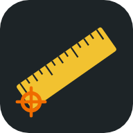

Meetmaat
Bouwtekening openen, ijken en maten aflezen voor in het werk
Je bent uitgenodigd voor een groep
Installeer Meetmaat hieronder en open hem. De app vraagt dan alleen nog je naam, en je zit in de groep: dan kun je tekeningen met metingen naar elkaar sturen.
iPhone: vraagt de app na het installeren niet om je naam? Kopieer dan de code hieronder. Open Meetmaat, tik op ⚙ Instellingen, plak de code bij Groepscode, vul je naam in en tik op Opslaan.
Groepscode
✓
Je hebt de app al
Open MeetmaatInstalleren met één tik
Daarna staat het icoon bij je apps.
✓
Geïnstalleerd
Je vindt hem nu bij je apps. Open Meetmaat voortaan via het icoon.
Open MeetmaatInstalleren op Android
Eerst: open deze link in Chrome. Houd de link in WhatsApp ingedrukt en kies Openen in Chrome (of tik rechtsboven op ⋮ → Openen in Chrome). Daarna de stappen hieronder.
- Tik rechtsboven op de drie puntjes
- Kies App installeren of Toevoegen aan startscherm
- Tik op Installeren. Het icoon staat daarna bij je apps.
Installeren op iPhone
- Tik onderin op het deel-knopje
- Scroll omlaag en kies Zet op beginscherm
- Tik rechtsboven op Voeg toe. Het icoon staat daarna op je beginscherm.
Staat "Zet op beginscherm" er niet bij? Dan is de link in WhatsApp geopend: eerst Open in Safari (het kompasje), en doe het daar opnieuw.
Installeren op iPhone (Chrome)
- Tik rechtsboven in de adresbalk op het deel-knopje
- Kies Zet op beginscherm
- Tik rechtsboven op Voeg toe. Het icoon staat daarna op je beginscherm.
Staat "Zet op beginscherm" er niet bij? Scroll in het deelmenu omlaag of tik op Meer. Lukt het niet, open de link dan in Safari.
Open dit op je telefoon
Scan de code met de camera van je telefoon. Dan krijg je daar de stappen voor die telefoon.
Doorsturen naar iemand anders
Stuur de link via WhatsApp of mail. De ander krijgt dan deze pagina met de stappen voor zijn telefoon.
Goed om te weten
- Open de app altijd via het icoon. Dan blijven je tekening, ijking en metingen bewaard.
- Werkt zonder internet: tekening openen, ijken, meten en uitzetten. Open hem wel één keer met internet.
- Internet nodig voor: luchtfoto en hoogtes (AHN) ophalen, en tekeningen naar de groep sturen of ophalen.
- Een PDF uit WhatsApp of de mail kun je ook delen naar Meetmaat (Android, na installeren).
- Alles blijft op je eigen telefoon. Geen account nodig.
Ook installeren: Perceelkaart en Zaaihulp
Aparte apps met een eigen icoon. Installeren gaat op dezelfde manier.
Perceelkaart installeren Zaaihulp installerenAndere telefoon? Toon alle stappen
Android (Chrome)
- Open de link in Chrome en tik rechtsboven op de drie puntjes ⋮
- Kies App installeren of Toevoegen aan startscherm, dan Installeren
iPhone (Safari)
- Open de link in Safari en tik onderin op het deel-knopje
- Kies Zet op beginscherm en tik op Voeg toe
iPhone (Chrome)
- Tik rechtsboven in de adresbalk op het deel-knopje
- Kies Zet op beginscherm (of eerst Meer) en tik op Voeg toe